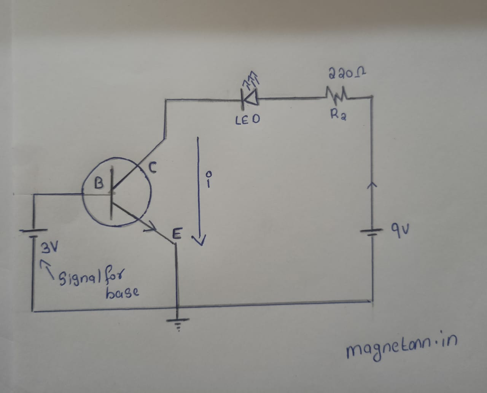
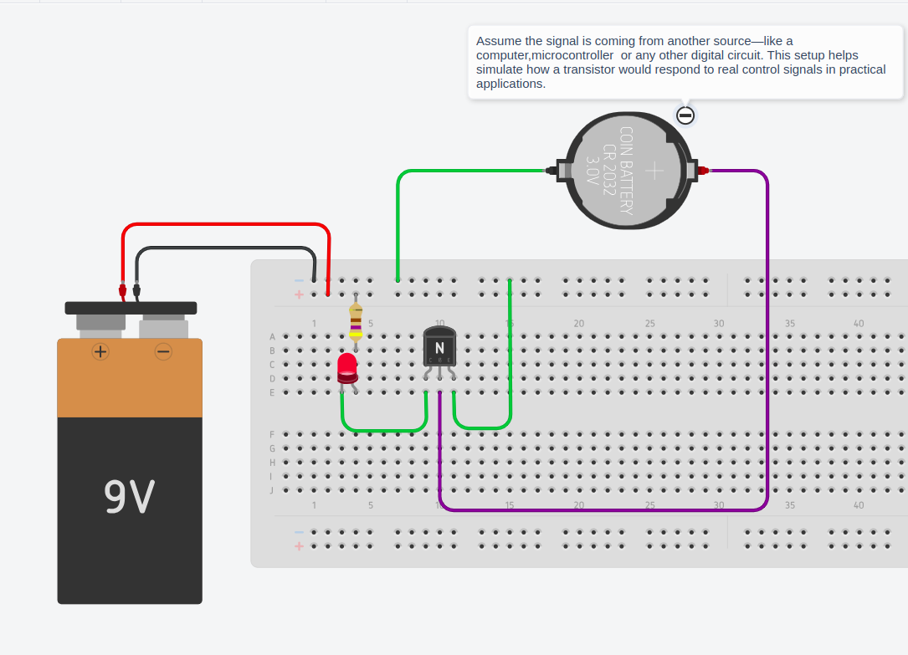
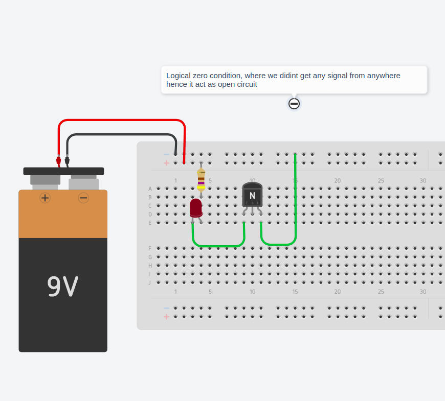
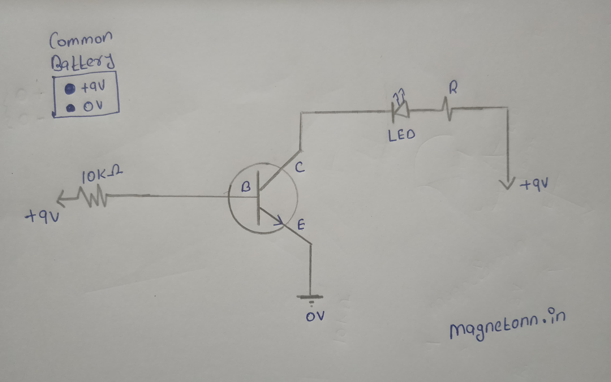
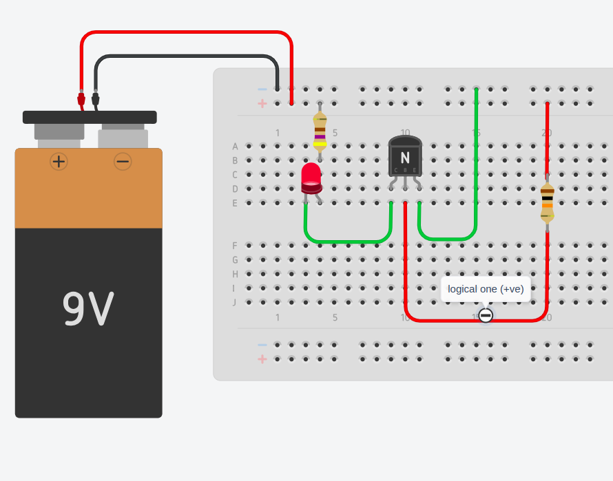
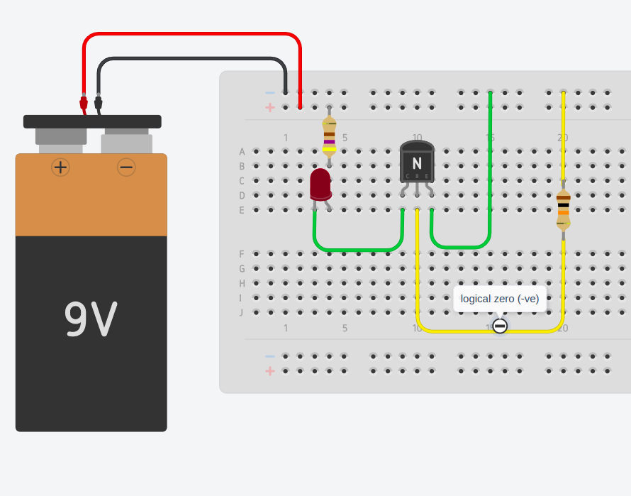

Transistor as a Switch in Digital Electronics: A Beginner-Friendly Guide
In this post, I’ll show you how a transistor works as a switch in digital electronics.
Basic Theory: How a Transistor Works as a Switch
A transistor is a semiconductor device used to control the flow of current. In digital electronics, it's mainly used as an electronic switch that can turn ON or OFF based on the input signal.
When used as a switch, a transistor operates in two modes:
1.Cut-off region (Switch off) :
No current flows from collector to emitter (BJT). This represents a digital 0 or LOW.
2.Saturation Region (Switch ON) :
Maximum current flows through the transistor. This represents a digital 1 or HIGH.
The transistor acts like a controlled gate: when a small input voltage is applied to its base (BJT) or gate (MOSFET), it allows a larger current to flow between the other two terminals.
Transistor Switching with Logical Inputs (BJT Example)
In a Bipolar Junction Transistor (BJT), the transistor turns ON when the voltage at the base is greater than approximately 0.7V (for an NPN transistor). This allows current to flow from the collector to the emitter, enabling the transistor to conduct.
In digital electronics:
A logical 1 (HIGH) is typically represented by a +5V or +3.3V signal.
A logical 0 (LOW) is represented by 0V (ground).
So when we apply a logical 1 to the base of the transistor:
The base-emitter junction becomes forward-biased.
The transistor turns ON and allows current to flow—just like closing a switch.
When we apply a logical 0:
The base-emitter junction remains OFF.
The transistor stays OFF—like an open switch.
The fundamental principle of using ON/OFF switching based on logical inputs lies at the heart of how transistors operate in digital electronics. This concept forms the basis for implementing logic gates—such as AND, OR, NOT, NAND, NOR, XOR, and XNOR—where the transistor’s ability to switch between conducting (ON) and non-conducting (OFF) states is used to represent binary logic (1 and 0). By arranging transistors in specific configurations, these logic gates can perform complex logical operations.
Moreover, this same switching behavior enables the construction of memory cells, flip-flops, and digital control circuits, which are essential building blocks in microprocessors, embedded systems, and digital communication devices.
Coming to experimentation section
A transistor operates as a switch when the emitter-base junction is forward biased and the collector-base junction is also forward biased. In this state, the transistor allows current to flow freely from collector to emitter, effectively acting like a closed switch. It's as if the entire circuit gets connected between the collector and emitter terminals. When a voltage greater than approximately 0.7V is applied to the base (for an NPN transistor like the BC547), the base-emitter junction conducts, turning the transistor ON and allowing current to flow through the collector-emitter path.
Here i experimented with two different setups. In the first setup, I used a single battery to power both the transistor's load and the control signal. In the second setup, I used two separate power sources—one for the load and another to simulate a digital control signal, similar to how a signal might come from a computer, microcontroller, or other logic circuit. This will help you to better understand how transistors respond to external digital inputs, just like in real-world electronic systems.
1. Circuit diagram (with two different source,one for siganl and other for output circuit)

(circuit with two different sources)
You might wonder how the collector-base junction can be forward biased when there’s no wire physically connecting them.In most cases, this concept isn’t discussed deeply, which often leads to confusion—especially for beginners. Let’s take a moment to analyze and clarify this.
When we say a junction (like emitter-base or collector-base) is forward biased or reverse biased, it doesn’t mean there’s a physical wire or direct connection between those terminals. Instead, biasing is purely about the voltage levels applied across the terminals, and how they affect the internal behavior of the transistor.
Forward Bias = Higher Voltage on the P-side
For a junction to be forward biased, the P-type side must be at a higher potential than the N-type side.
In an NPN transistor, this means:
Emitter-Base Junction is forward biased if:
VBase > VEmitter
VBase > VCollector
So even though there’s no physical connection between base and collector, if the base voltage is higher than the collector, the internal collector-base junction becomes forward biased—allowing current to flow inside the transistor.
Summary of the doubt
In saturation mode, the collector voltage (VC) is lower than the base voltage (VB). This is because the transistor is fully turned ON and behaves like a closed switch. As a result, the voltage at the collector drops and becomes close to the emitter voltage. If the emitter is grounded (0V), the collector voltage will typically be slightly above 0V—usually around 0.1V to 0.3V, depending on the transistor.
That’s why the collector-base junction becomes forward biased—because the base is at a higher potential than the collector, just like in a forward-biased diode. So that's why collector-base junction become forward baised without need of any physical connection
breadboard setup of first circuit
Logical 1 condition (Switch ON)

(left click and open image in new tab for better clarity or download and view )
Using two different power sources helps simulate a real digital control signal—like one coming from a computer, microcontroller, or logic circuit—based on first principles of how transistors respond to voltage levels in real digital systems
Logical 0 condition (Switch OFF)

(left click and open image in new tab for better clarity or download and view )
Logical zero will be with no source or no signal condition
2. Circuit diagram (with single source for signal and output circuit)

Here, we use a common power supply to provide both the base input signal and the output circuit of the transistor.
breadboard setup of second circuit
Logical 1 (Switch ON)

Here, we connected the positive terminal of the battery to the base of the transistor. Since this voltage is above 0.7V, the transistor turns ON and allows current to flow through the circuit—just like a closed switch. As a result, you can see the LED glowing
Logical 0 (Switch OFF)

On the other hand, when we give 0V (logical 0) to the base, the transistor remains OFF, acting like an open switch. In this state, no current flows, and the LED stays off.
Note :In our setup, we use the positive side of the battery to represent logical 1 and the negative side (ground) to represent logical 0. But in digital electronics or computers, these signals do more than just show voltage—they are used to control different parts of a circuit, like turning things on or off, storing data, or making decisions.
Summary of this blog post
Types of transistors
Transistor switching modes
Explained how forward biasing of collector-base is occuring
Explanation of a transistor as a switch with an LED circuit, including both breadboard and schematic diagrams, for single and multiple power sources
"Hope you enjoyed! Thank you for reading, and happy learning. If you have any doubts, feel free to email me at me@magnetonn.in."